课程封面：A股下半年市场策略
本次分享主题为A股下半年市场策略，核心问题：6月底以来超预期上涨后，当前是否会重演2014/2015年的杠杆牛行情？
全球大类资产：黄金强美元弱，权益整体表现好
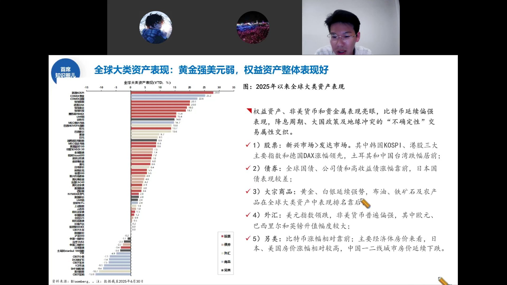
2025年以来，全球权益资产、非美货币和贵金属表现亮眼。从YTD收益率看：
- 股票：新兴市场优于发达市场。韩国KOSPI涨幅第一，港股三大指数、德国DAX紧随其后；A股上证虽不突出，但风格指数表现强
- 商品：黄金、白银延续强势，布油、铁矿石及农产品排名靠后
- 外汇：美元指数领跌，非美货币普遍偏强，欧元、巴西雷亚尔、英镑升值幅度较大
- 另类：比特币涨幅靠前；主要经济体房价分化，日美较高，中国一二线城市延续下跌
今年资产结构延续了2024年"9·24"以来的格局：权益偏强、新兴市场优于发达市场。降息周期、大国政策及地缘冲突的"不确定性"交易属性交织。
年度级别仍是大牛市：第五轮宽松周期起点
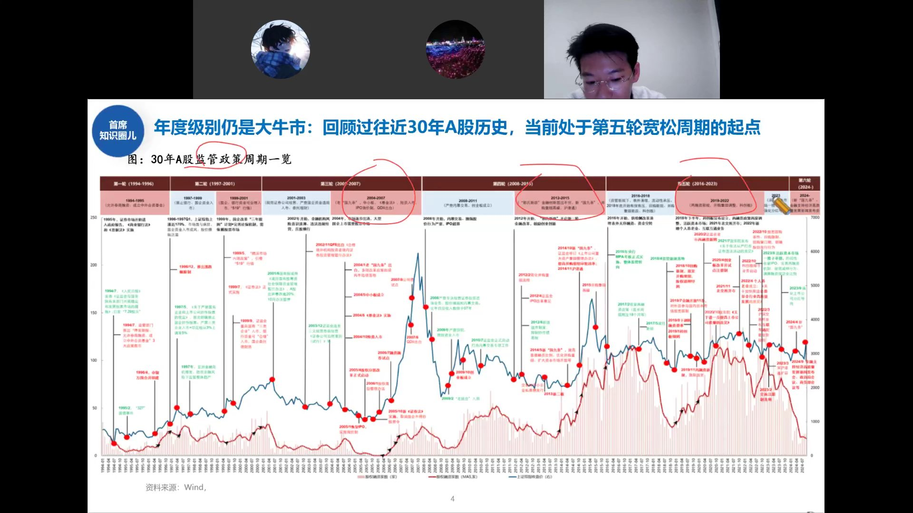
回顾近30年A股历史，大级别牛市都诞生于监管政策友好的宽松周期。图中标出了六轮监管政策周期，当前正处于第五轮宽松周期的起点区域。
历史经验：大级别指数牛市都出现在红色政策友好区间。从政策周期视角看，当前没有发生方向性变化，政策面仍是冲量条件。
政策对A股市场仍然关键。只能从大背景看，目前没有太大变化——这是年度级别判断的基础。
政策定调：适度宽松货币，稳住楼市股市
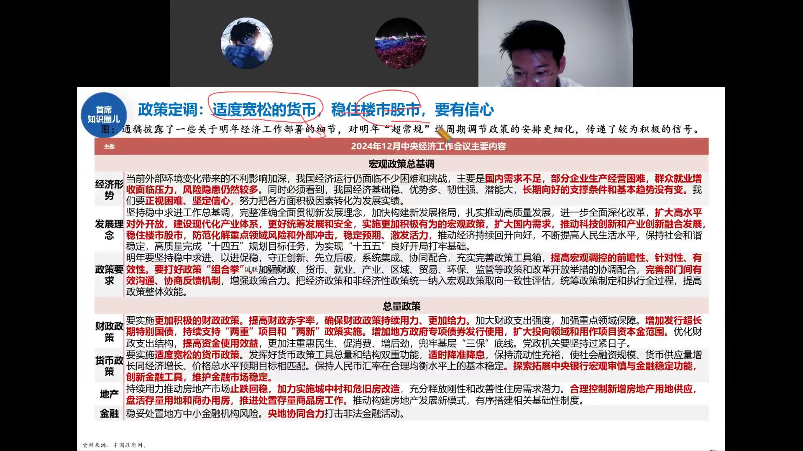
2024年12月中央经济工作会议对2025年经济工作部署传递了较为积极的信号：
- 适度宽松的货币政策：流动性管够，子弹管够。年内无风险利率下行极快——存款利率一个点出头，货币基金收益不到1%，理财收益率快速下行
- 稳住楼市股市：运行半年多以来确实做到了——楼市没崩，比去年好很多；股市表现更不必说
- 更积极的财政政策：提高财政赤字率，增发超长期特别国债
从半年到年度级别看，市场仍处于非常友好的政策环境中——这是自上而下判断的核心前提。
关税到哪了：对华税率降至43.8%
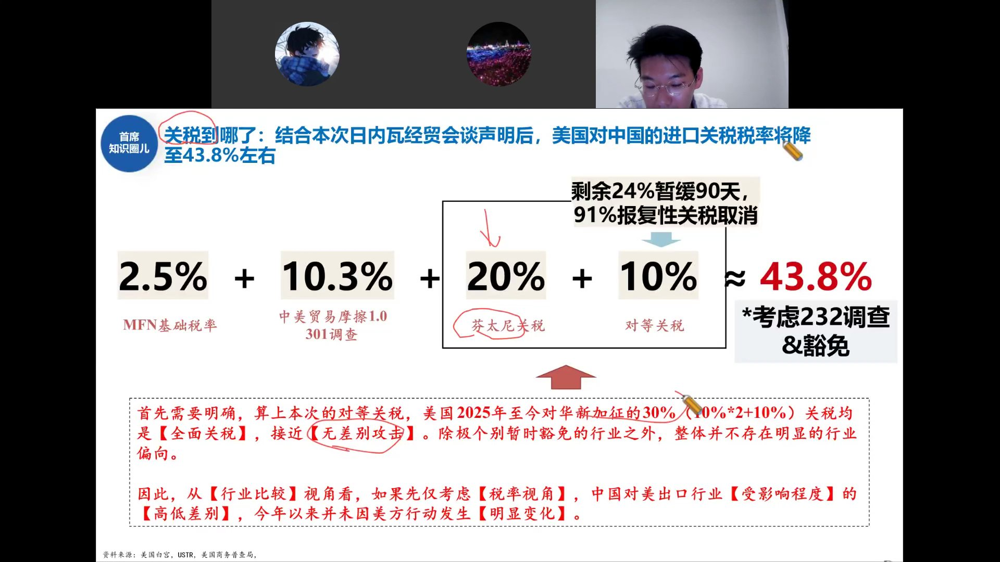
结合日内瓦经贸会谈声明，美国对中国进口关税税率结构如下：
- MFN基础税率：2.5%
- 301调查（贸易摩擦1.0）：10.3%
- 芬太尼关税：20%（剩余24%暂缓90天，91%报复性关税取消）
- 对等关税：10%
- 合计约：43.8%（考虑232调查及豁免）
关键判断：2025年至今对华新加征的30%关税（10%×2+10%）均为全面关税，接近"无差别攻击"，除极个别暂时豁免行业外，不存在明显行业偏向。因此从税率视角看，中国对美出口行业受影响程度的高低差别，今年以来未因美方行动发生明显变化。
30%关税已经很高——本来100美金的商品，加关税就要多交30美金。但这接近全球关税平均水平，进一步大幅加码的空间有限。
美国货币财政双宽：大美丽法案
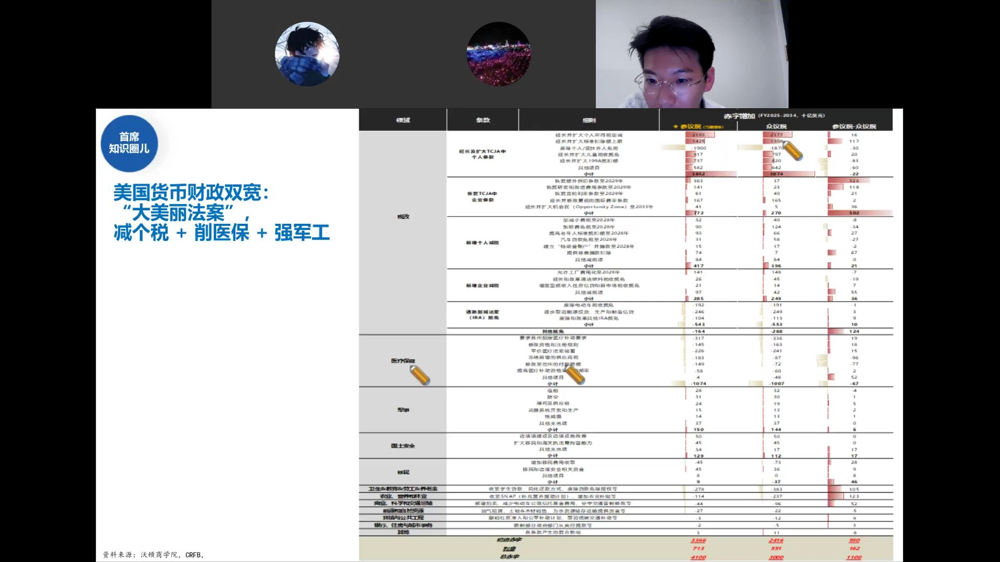
特朗普"大美丽法案"的核心是减个税 + 削医保 + 强军工，本质是货币财政双宽预期：
- 延长并扩大TCJA个人税项减税
- 削减医保支出（Medicaid等）
- 将军工国防开支挪入新增预算
- 对美国财政赤字扩张形成持续支撑
这一财政扩张方向叠加美联储降息预期，构成了海外流动性宽松的大背景。
海外流动性：降息窗口下半年打开
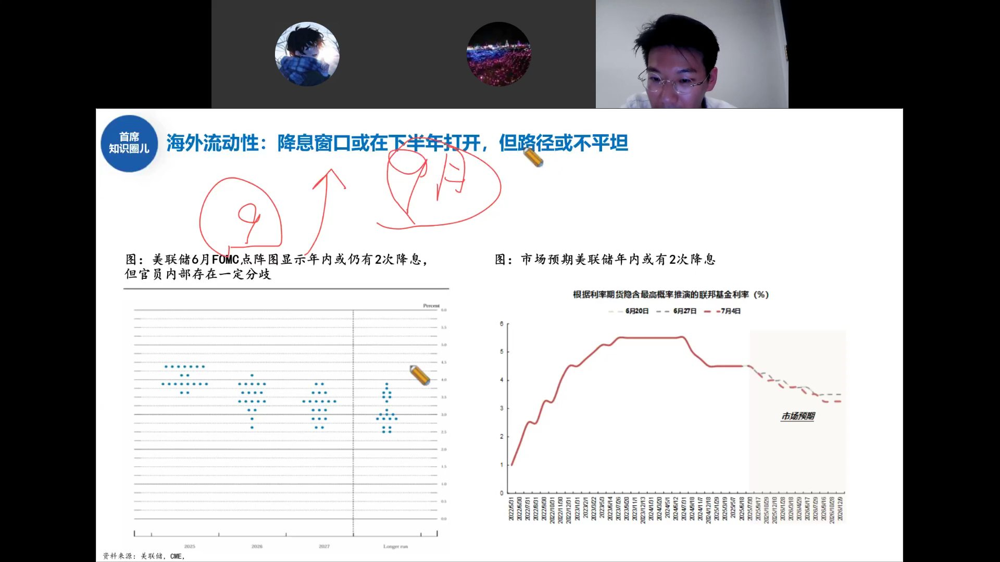
美联储6月FOMC点阵图显示年内仍有2次降息空间，但官员内部存在一定分歧：
- 最早9月份开启第一次降息（去年也是9月首次降息，随后9·24国内政策跟进）
- 路径可能并不平坦——关税问题可能对降息节奏形成扰动
- 市场预期年内或有2次降息，但降息较为"扭捏"
港股对海外流动性最敏感——去年9月美联储降息后港股先涨。当前港股性价比仍然较高，即使恒生科技已涨不少。
港股：PB-ROE性价比仍具吸引力
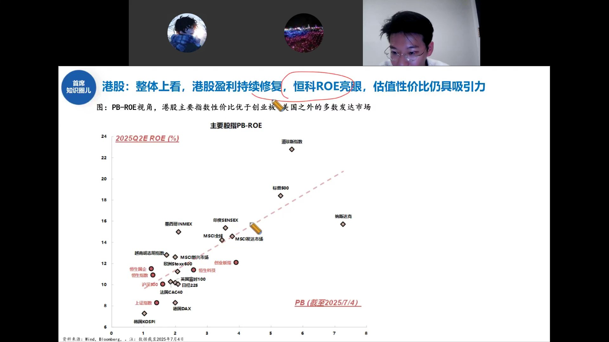
从PB-ROE视角看，港股主要指数性价比优于创业板及美国之外的多数发达市场：
- 恒生科技ROE亮眼，处于散点图中ROE较高但PB较低的位置
- 恒生国企、恒生指数、沪深300均在低PB区间
- 相比之下，纳斯达克PB高达7倍以上，标普500也在5倍以上
港股今年弹性比A股高，估值性价比仍具吸引力。即使恒生科技已涨不少，从全球比较来看仍不贵。
九转见顶信号：历史例外与当前位置
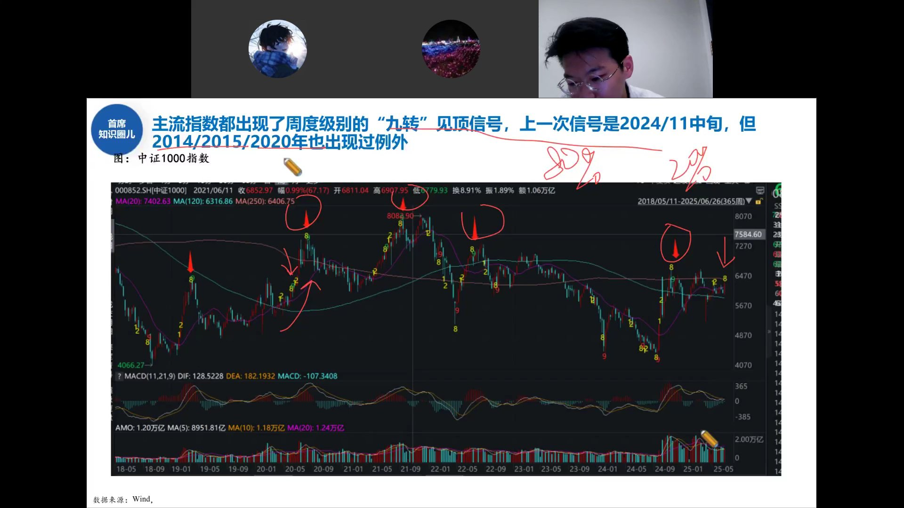
主流指数出现了周度级别的"九转"见顶信号，上一次信号是2024年11月中旬。但历史上：
- 九转信号并非100%准确——2014、2015、2020年都出现过例外
- 信号出现后指数可能继续上行，只是短期涨幅收窄
- 不能仅凭技术信号就判断市场见顶
会不会走出2014/2015年的情形？
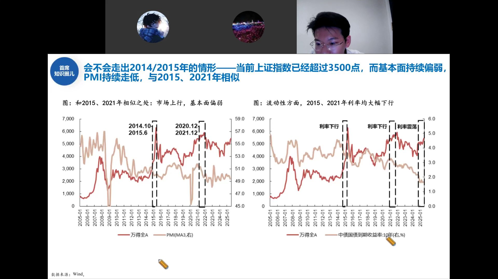
当前上证指数已超过3500点，而基本面持续偏弱、PMI持续走低，与2015、2021年有相似之处：
相似之处：市场上行，基本面偏弱
- 2014.10—2015.6：万得全A上行，PMI下行
- 2020.12—2021.12：万得全A上行，PMI下行
- 当前：指数站上3500，PMI持续走低，基本面偏弱
流动性方面：利率均大幅下行
- 2014—2015年：10年期国债收益率大幅下行
- 2020—2021年：利率大幅下行
- 当前：无风险利率快速下行，理财收益、存款利率持续走低
这是一轮"水+情绪"驱动的行情，而非基本面支撑的牛市。PMI持续下行但市场上涨，说明这不是基本面牛，而是流动性和情绪驱动的估值修复。
弱基本面下，流动性是关键
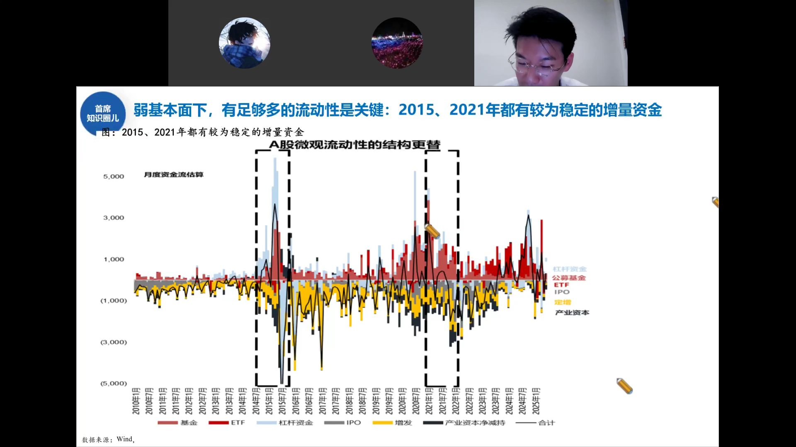
弱基本面下，有足够多的流动性是关键。回顾2015和2021年两轮牛市，都有较为稳定的增量资金：
- 图中展示A股微观流动性的结构更替——基金、ETF、杠杆资金、IPO、定增、产业资本净增持
- 2015年：杠杆资金（两融）大规模流入，蓝色柱子异常突出
- 2021年：公募基金大规模发行，红色柱子突出
- 两轮牛市都有明确的、可识别的增量资金主力
本轮资金流在回升，但远弱于历史牛市
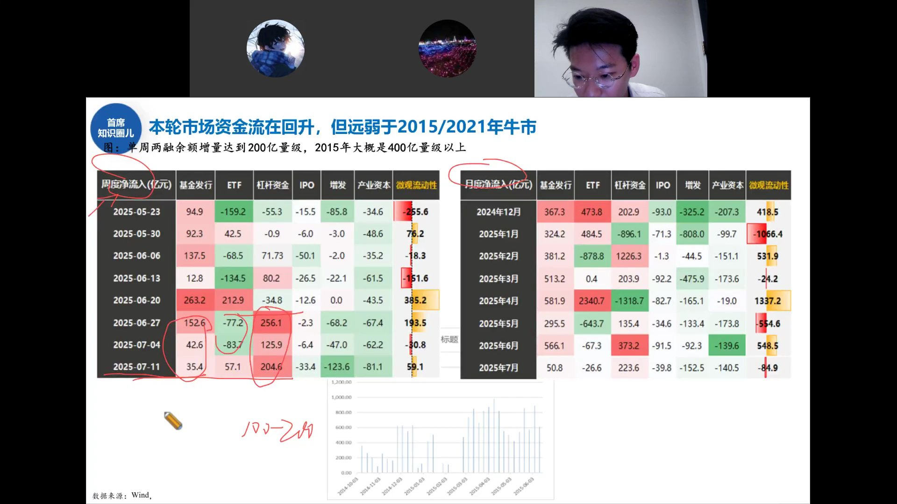
当前资金面确实在回暖，但量级与历史牛市差距明显：
- 单周两融余额增量达到200亿量级，而2015年大概是400亿量级以上
- 2025年6月单周杠杆资金增量峰值约250亿，远低于2015年水平
- 月度微观流动性净流入在正负之间波动，尚未形成持续大额净流入
- 公募基金今年规模不增反降——股市暴涨但公募份额在赎回
本轮资金流在回升，但远弱于2015/2021年牛市。200亿 vs 400亿，量级差了一倍。
两轮无基本面牛市都有约2万亿增量
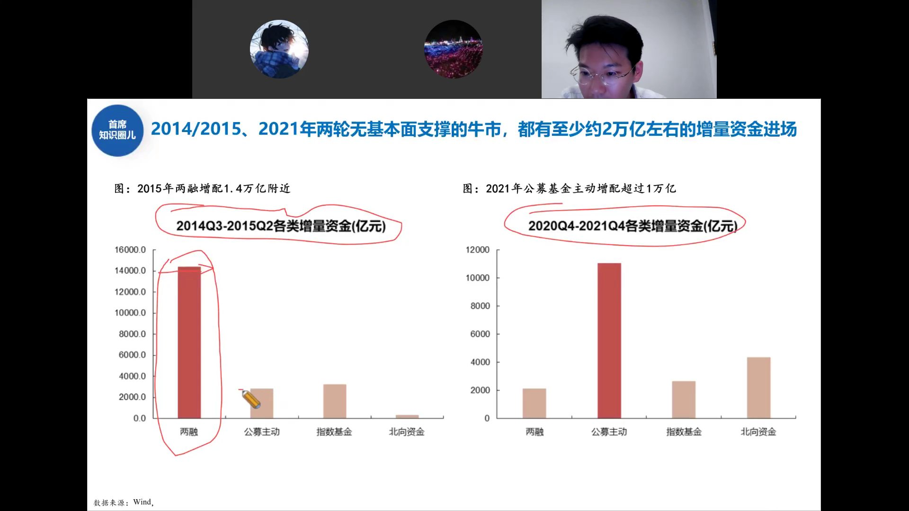
2014/2015和2021两轮无基本面支撑的牛市，都有至少约2万亿增量资金进场：
2014Q3—2015Q2
- 两融增配约1.4万亿（绝对主力）
- 公募主动、指数基金、北向资金合计约数千亿
2020Q4—2021Q4
- 公募主动增配超过1万亿（绝对主力）
- 两融、指数基金、北向资金合计约数千亿
两轮牛市的资金结构不同：2015靠杠杆，2021靠公募，但共同点是都有约2万亿的增量资金。当前能否凑出2万亿？这是判断能否复制历史的关键。
保险资金：每年3000-5000亿增量
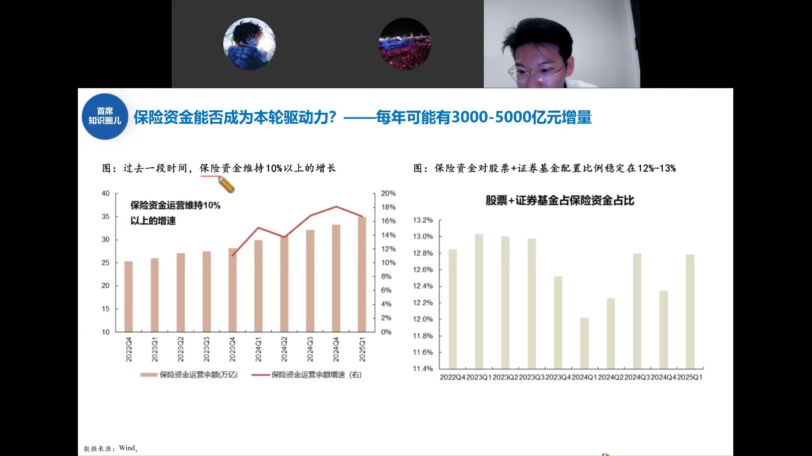
保险资金能否成为本轮驱动力？
- 全国保险资金运营余额约30-35万亿，维持10%以上增速
- 每年保费增长带来约3000-5000亿新增可投资金
- 保险资金对股票+证券基金配置比例稳定在12%-13%
- 吴清主席年初提到10%的股票配置比例目标，若提升至更高比例，增量可观
保险确实是市场的一大增量。每年可能有三五千亿进来，但相对于2万亿的牛市门槛，量级仍不够。
保险资金与银行股的持续上行
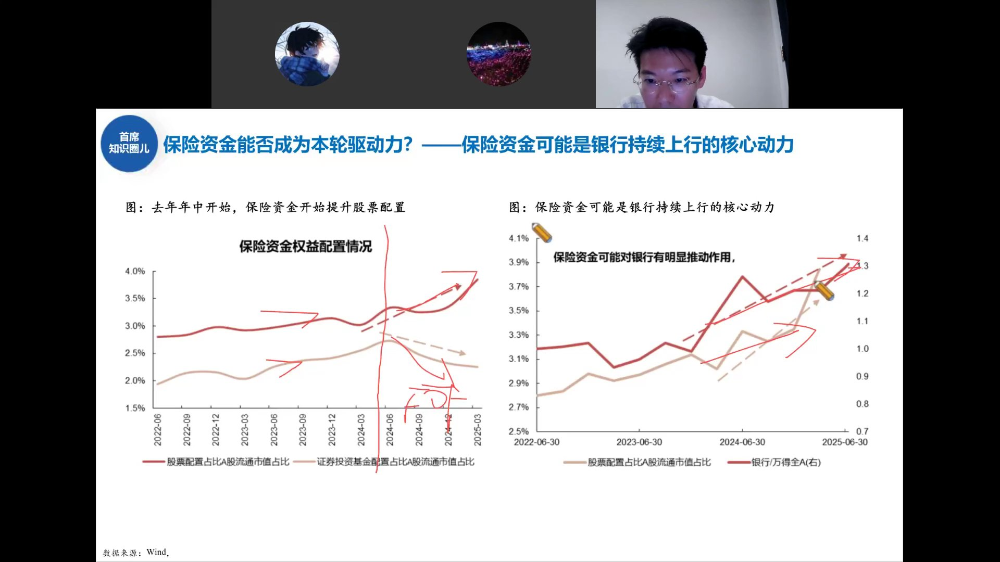
保险资金可能是银行持续上行的核心动力：
- 去年年中开始，保险资金开始提升股票配置
- 保险资金偏好稳定资产——大量买入银行股
- 保险对波动的容忍度与个人投资者不同，不需要短期买卖博弈
- 随着保险股票配置比例上升，基本对应银行板块的持续上行
很多银行被保险举牌。保险买银行不是因为短期要博弈，而是作为长久期资产配置——这决定了银行行情的持续性。
结构上，低位行业是上行驱动力
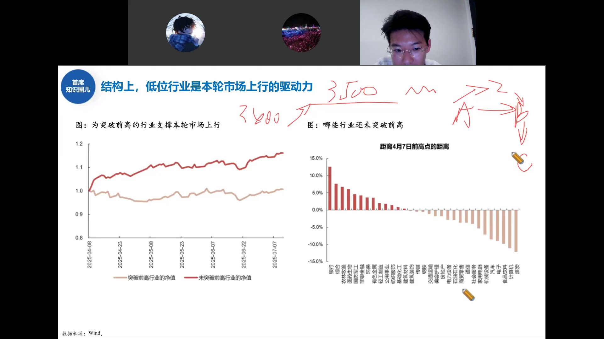
本轮市场上行的结构特征非常清晰——低位行业补涨：
- 将行业分为"突破前高"和"未突破前高"两组
- 未突破前高的行业净值持续跑赢——这就是本轮上行的核心驱动力
- 距离4月7日前高点最近的行业（银行、综合、农林牧渔等）涨幅居前
- 距离前高点较远的行业（计算机、煤炭、食品饮料等）反而落后
市场轮动极快——100个行业里开始只有10个创新高，剩下90个里再找下一个补涨标的。这是典型的"低位补涨"行情，而非全面牛市。
A股交易规律：65%时间窄幅波动
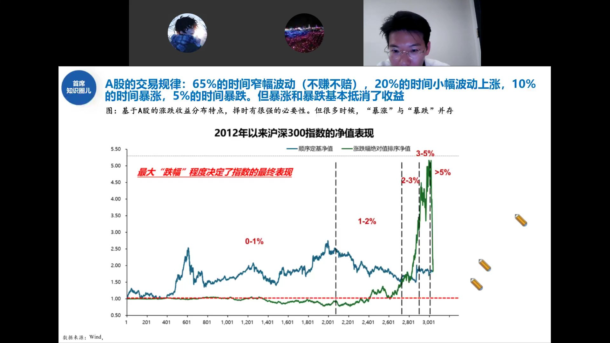
A股的涨跌收益分布有一个非常极端的特征：
- 65%的时间：窄幅波动（单日涨跌幅1%以内），基本不赚不赔
- 20%的时间：小幅波动上涨（1%-2%）
- 10%的时间：暴涨（3%以上）
- 5%的时间：暴跌（3%以上下跌）
关键发现：暴涨和暴跌基本抵消了收益。把所有交易日按涨跌幅绝对值排序后会发现，真正贡献收益的是那20%的小幅波动时间，而不是大家期待的"暴涨日"。
最大"跌幅"程度决定了指数的最终表现——你能不能熬过那5%的暴跌时间，决定了你能不能享受到后面的收益。
中美对比：美股小幅波动收益更强
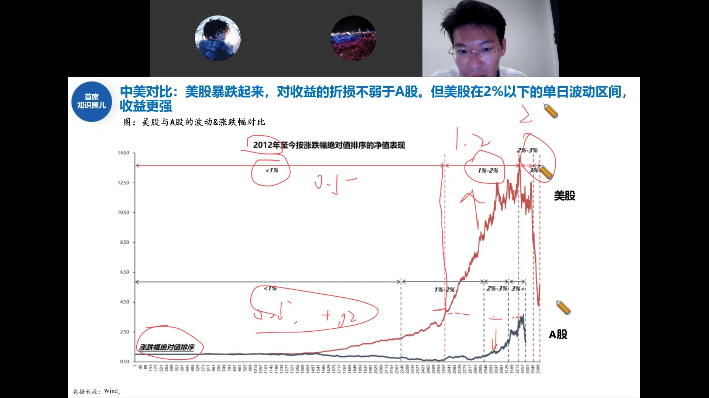
将美股（上图红线）与A股（下图黑线）按同样方式排序对比：
- 美股暴跌起来对收益的折损不弱于A股——尾部风险同样巨大
- 但在2%以下的单日波动区间，美股的收益积累明显更强
- 美股在大部分时间里"润物细无声"地上涨，暴涨暴跌的比例远低于A股
A股择时非常重要——65%的时间你可能在原地踏步，但错过那20%的关键时间点，收益就大打折扣。
日历效应：上涨完成于较短时间区间
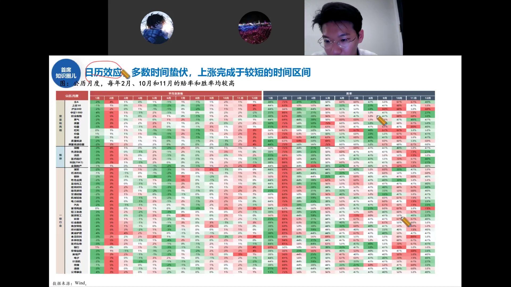
从历史月度统计看，A股存在明显的日历效应：
- 2月份：赔率和胜率均最高（约80%概率上涨），春节前后行情
- 10月、11月：胜率较高，大级别上涨行情多始于9月末或10月
- 12月中旬以后：通常是全年较弱的时段
- 多数时间市场蛰伏，主要上涨在较短时间区间内完成
A股不缺机会——大部分时间蛰伏，上涨集中在2月、10-11月等关键窗口。错过这些窗口，全年收益就会很差。
A股情绪周期：牛市诞生于绝望期
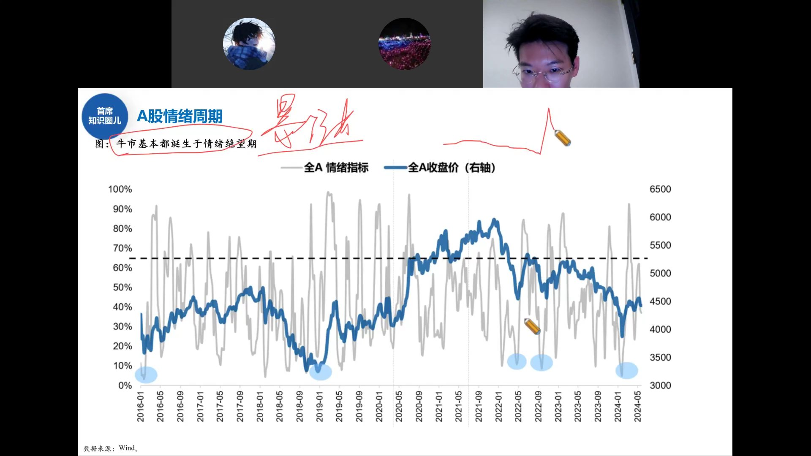
邓老师团队自建的全A情绪指标显示：
- 历史上大牛市基本都诞生于情绪绝望期（情绪指标接近0%的位置）
- 图中蓝色圆点标出了几次情绪极低的时点：2016年初、2019年初、2022年中、2024年初
- 每次情绪极低后，都对应着一轮级别不小的上涨
- 情绪指标在60%以上时，往往对应市场阶段性高位
暴涨型牛市都诞生于大家最绝望的时候。什么叫绝望？就是情绪指标到极低位置——这时反而要大胆。
红利资产快速"缩圈"
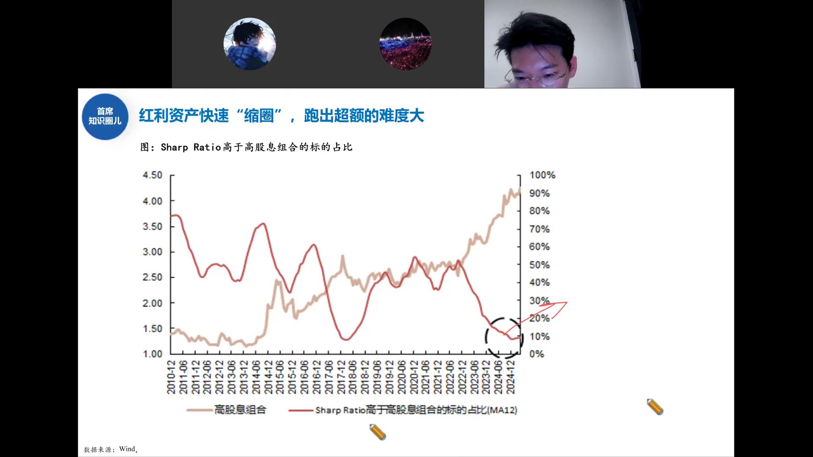
今年红利资产的表现出现了一个值得警惕的变化：
- 过去几年买中证红利、红利低波等指数效果很好
- 但今年红利指数整体表现较差，只有银行在涨
- "Sharpe Ratio高于高股息组合的标的占比"指标已降至历史低位——意味着高股息组合内部能跑赢的标的越来越少
- 红利在"缩圈"：从之前的"雨露均沾"变成只有银行一枝独秀
红利缩圈意味着跑出超额的难度在加大。以前买红利闭眼都能涨，现在必须选到银行才行——BCD类红利标的已经不涨了。
当前市场结构拥挤：太多钱追逐太少机会
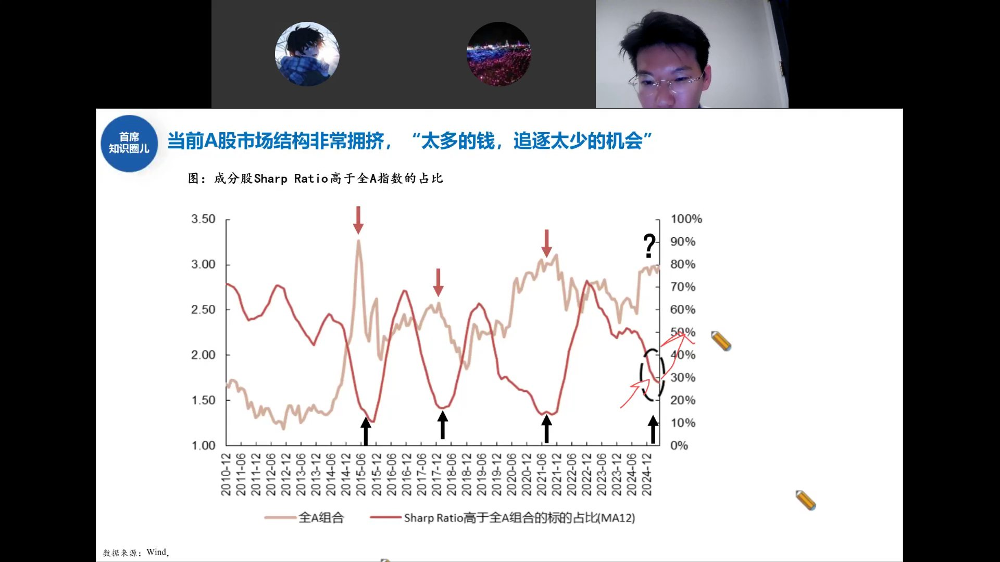
从全A成分股的Sharpe Ratio分布看：
- 历史上几次指标高位（红箭头）：2015年中、2018年初、2021年初——都对应市场阶段性顶部区域
- 几次低位（黑箭头）：2014年中、2018年底、2022年底——都对应底部区域
- 当前指标处于约50%分位附近，箭头指向正在上升
"太多的钱，追逐太少的机会"——市场结构正在变得拥挤，但还没到极端。如果太拥挤太极致，就需要警惕。
宏观周期下的风格轮动
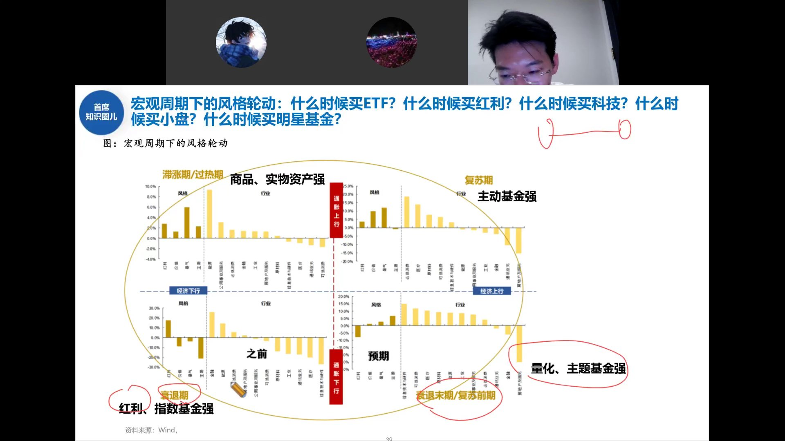
最后用一张经典的宏观周期风格轮动图总结：
- 衰退期（经济下行+通胀下行）：红利、指数基金强
- 衰退末期/复苏前期（经济转向+通胀低位）：量化、主题基金强
- 复苏期（经济上行+通胀温和）：主动基金强
- 滞涨期/过热期（经济高位+通胀上行）：商品、实物资产强
当前处于哪个位置？经济偏弱但政策发力、通胀低位回升——更接近衰退末期/复苏前期，量化和主题轮动策略占优。这也解释了为什么今年量化和低位主题轮动做得好。
什么时候买ETF？什么时候买红利？什么时候买科技？什么时候买小盘？什么时候买明星基金？——答案取决于你处于宏观周期的哪个象限。